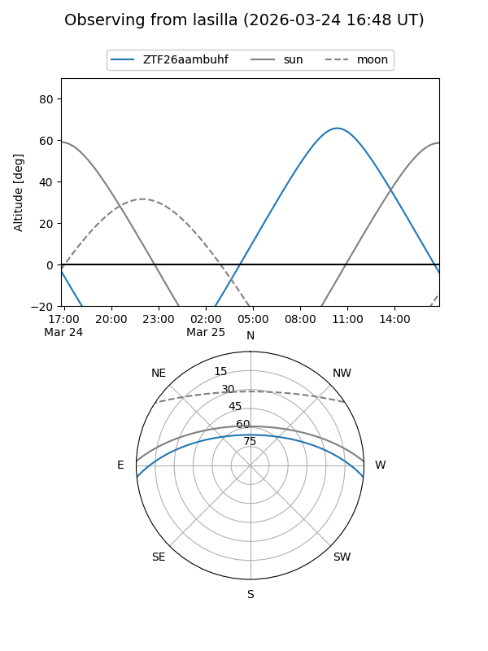
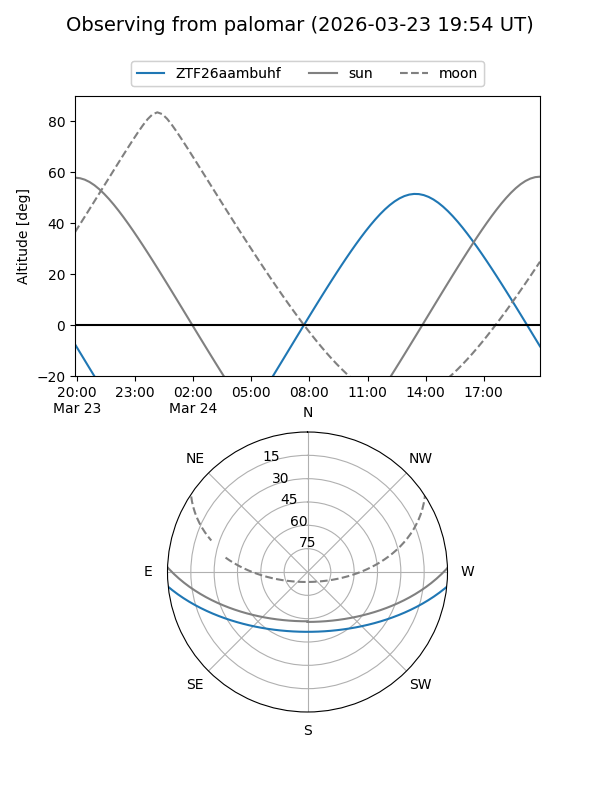

ZTF26aambuhf
Target ZTF26aambuhf at 2026-03-24 14:10
Aliases and brokers:
FINK: link
Lasair: link
ALeRCE: link
alt names
ZTF26aambuhf (ztf,fink_ztf)
Coordinates:
equatorial (ra, dec) = 266.9512,-5.08783
equatorial (HMS+DMS) = 17:47:48.28,-05:05:16.18
galactic (l, b) = (20.9429,+11.68585)
Flags:
Photometry:
last ztfg=16.18, ztfr=15.69
1 ztfg, 1 ztfr detections
Lightcurve
Visibility


Additional plots